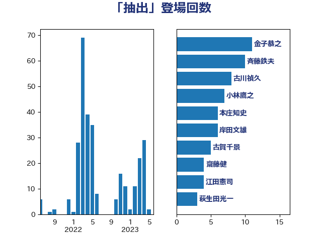

単語「抽出」

| 金子恭之 | 自由民主党 | 11 回 |
| 斉藤鉄夫 | 公明党 | 10 回 |
| 古川禎久 | 自由民主党 | 8 回 |
| 小林鷹之 | 自由民主党 | 7 回 |
| 本庄知史 | 立憲民主党 | 6 回 |
| 岸田文雄 | 自由民主党 | 6 回 |
| 古賀千景 | 立憲民主党 | 5 回 |
| 齋藤健 | 自由民主党 | 4 回 |
| 江田憲司 | 立憲民主党 | 4 回 |
| 萩生田光一 | 自由民主党 | 3 回 |
| 米山隆一 | 立憲民主党 | 3 回 |
| 木原誠二 | 自由民主党 | 3 回 |
| 徳永エリ | 立憲民主党 | 3 回 |
| 小倉將信 | 自由民主党 | 3 回 |
| 吉田統彦 | 立憲民主党 | 3 回 |
| 中川正春 | 立憲民主党 | 3 回 |
| 高市早苗 | 自由民主党 | 2 回 |
| 青山大人 | 立憲民主党 | 2 回 |
| 鈴木俊一 | 自由民主党 | 2 回 |
| 野田聖子 | 自由民主党 | 2 回 |
| 野田国義 | 立憲民主党 | 2 回 |
| 重徳和彦 | 立憲民主党 | 2 回 |
| 緒方林太郎 | 無所属 | 2 回 |
| 竹内真二 | 公明党 | 2 回 |
| 田村貴昭 | 日本共産党 | 2 回 |
| 田村まみ | 国民民主党 | 2 回 |
| 田嶋要 | 立憲民主党 | 2 回 |
| 田島麻衣子 | 立憲民主党 | 2 回 |
| 後藤茂之 | 自由民主党 | 2 回 |
| 岡田直樹 | 自由民主党 | 2 回 |
| 山崎正恭 | 公明党 | 2 回 |
| 吉川沙織 | 立憲民主党 | 2 回 |
| 加藤勝信 | 自由民主党 | 2 回 |
| 倉林明子 | 日本共産党 | 2 回 |
| 伴野豊 | 立憲民主党 | 2 回 |
| 仁木博文 | 無所属 | 2 回 |
| 上田清司 | 国民民主党 | 2 回 |
| 三浦信祐 | 公明党 | 2 回 |
| 黄川田仁志 | 自由民主党 | 1 回 |
| 高良鉄美 | 無所属 | 1 回 |
| 高橋英明 | 日本維新の会 | 1 回 |
| 高木真理 | 立憲民主党 | 1 回 |
| 馬場雄基 | 立憲民主党 | 1 回 |
| 音喜多駿 | 日本維新の会 | 1 回 |
| 鈴木英敬 | 自由民主党 | 1 回 |
| 鈴木敦 | 国民民主党 | 1 回 |
| 谷合正明 | 公明党 | 1 回 |
| 西村康稔 | 自由民主党 | 1 回 |
| 藤田文武 | 日本維新の会 | 1 回 |
| 葉梨康弘 | 自由民主党 | 1 回 |
| 若宮健嗣 | 自由民主党 | 1 回 |
| 自見はなこ | 自由民主党 | 1 回 |
| 羽田次郎 | 立憲民主党 | 1 回 |
| 笠浩史 | 無所属 | 1 回 |
| 田村憲久 | 自由民主党 | 1 回 |
| 玉木雄一郎 | 国民民主党 | 1 回 |
| 牧山ひろえ | 立憲民主党 | 1 回 |
| 渡辺猛之 | 自由民主党 | 1 回 |
| 浜田靖一 | 自由民主党 | 1 回 |
| 河西宏一 | 公明党 | 1 回 |
| 沢田良 | 日本維新の会 | 1 回 |
| 森屋隆 | 立憲民主党 | 1 回 |
| 梅谷守 | 立憲民主党 | 1 回 |
| 梅村みずほ | 日本維新の会 | 1 回 |
| 松本剛明 | 自由民主党 | 1 回 |
| 末松信介 | 自由民主党 | 1 回 |
| 新妻秀規 | 公明党 | 1 回 |
| 平沼正二郎 | 自由民主党 | 1 回 |
| 平山佐知子 | 無所属 | 1 回 |
| 岸真紀子 | 立憲民主党 | 1 回 |
| 山添拓 | 日本共産党 | 1 回 |
| 小野泰輔 | 日本維新の会 | 1 回 |
| 小沼巧 | 立憲民主党 | 1 回 |
| 小沢雅仁 | 立憲民主党 | 1 回 |
| 宮路拓馬 | 自由民主党 | 1 回 |
| 安江伸夫 | 公明党 | 1 回 |
| 堀内詔子 | 自由民主党 | 1 回 |
| 國重徹 | 公明党 | 1 回 |
| 吉良よし子 | 日本共産党 | 1 回 |
| 吉田とも代 | 日本維新の会 | 1 回 |
| 加田裕之 | 自由民主党 | 1 回 |
| 伊藤渉 | 公明党 | 1 回 |
| 伊藤孝江 | 公明党 | 1 回 |
| 伊藤孝恵 | 国民民主党 | 1 回 |
| 井出庸生 | 自由民主党 | 1 回 |
| 串田誠一 | 日本維新の会 | 1 回 |